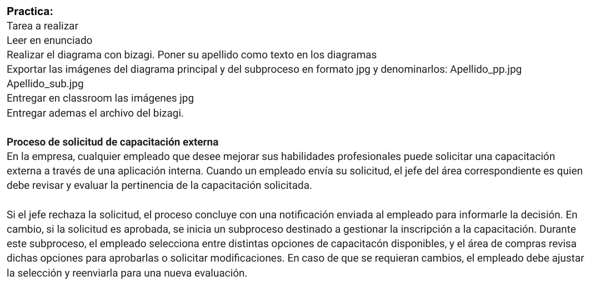
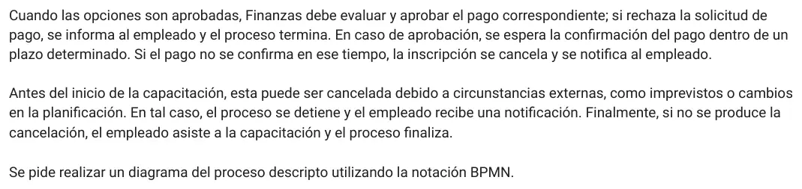

1° parcial, 27/06/2026, práctica
1° parcial, 27/06/2026
Enunciado




Propuesta de respuesta
Respuesta no verificada. La propuso Luta Studios con inteligencia artificial y ningún docente la revisó. Puede tener errores.
Van dos diagramas, como pide la entrega. El principal es el de Apellido_pp.jpg y el del subproceso, el de Apellido_sub.jpg. En los dos falta tu apellido como texto, que la consigna también pide.
Diagrama principal
Compras y Finanzas aparecen solo en el subproceso, así que el principal lleva dos carriles. El subproceso va colapsado, con el signo + abajo, en el carril del empleado, porque arranca con su selección.
| Del enunciado | En el diagrama |
|---|---|
| «Cuando un empleado envía su solicitud, el jefe del área correspondiente es quien debe revisar y evaluar» | Una tarea en el carril del empleado y otra en el del jefe |
| «Si el jefe rechaza la solicitud, el proceso concluye con una notificación enviada al empleado» | Compuerta exclusiva y evento de fin de mensaje |
| «Se inicia un subproceso destinado a gestionar la inscripción» | Subproceso colapsado |
| «Antes del inicio de la capacitación, esta puede ser cancelada» y «si no se produce la cancelación, el empleado asiste» | Compuerta basada en eventos. Sigue el camino de lo que pase primero, el aviso de cancelación (evento de mensaje) o la fecha de inicio (evento de tiempo) |
El subproceso puede terminar de tres formas y solo una sigue. Por eso, a la salida, una compuerta exclusiva pregunta si quedó inscripto. Si no, el proceso termina sin otro aviso, porque la notificación ya salió adentro del subproceso.
Subproceso «Gestionar la inscripción»
| Del enunciado | En el diagrama |
|---|---|
| «El empleado selecciona entre distintas opciones» y «el área de compras revisa dichas opciones» | Una tarea en el carril del empleado y otra en el de compras |
| «El empleado debe ajustar la selección y reenviarla para una nueva evaluación» | Un ciclo que vuelve a la revisión por una compuerta exclusiva de unión |
| «Finanzas debe evaluar y aprobar el pago correspondiente; si rechaza la solicitud de pago, se informa al empleado y el proceso termina» | Tarea de Finanzas, compuerta exclusiva y evento de fin de mensaje |
| «Se espera la confirmación del pago dentro de un plazo determinado» | Compuerta basada en eventos entre el mensaje de la confirmación y el evento de tiempo del plazo. Si vence el plazo, termina con un evento de fin de mensaje que cancela la inscripción y avisa |
Tipos de tarea. «Enviar la solicitud» se hace en la aplicación interna, así que puede ir como tarea de tipo Usuario. «Asistir a la capacitación» no usa una aplicación y puede ir como Manual. El enunciado no dice cómo se hacen las demás, y quedan sin tipo.
Respuesta no verificada. Puede tener errores.
Se armó con el enunciado de la práctica del 1° parcial del 27/06/2026 y los términos de sus consignas de teoría, en la página del 1° parcial. La materia no tiene apunte de BPMN, así que los símbolos son los de la notación BPMN que pide la consigna, como los dibuja Bizagi.
Quedó en duda: No hay resolución oficial ni apunte de la cátedra para comparar. No se sabe si la cátedra quiere un pool con carriles o un pool por participante, ni dónde prefiere cortar el subproceso. Acá la evaluación de Finanzas y la espera del pago quedan adentro, porque el enunciado dice que ahí se cancela la inscripción. El enunciado no dice quién recibe la confirmación del pago ni quién avisa la cancelación externa, así que la espera del pago quedó en Finanzas. Los tipos de tarea salen de las opciones de la consigna de teoría, que no están corregidas.
¿Cómo te fue?
Marcá cada tema del examen.
- Diagrama BPMN1° parcial
- BizagiCómo viene el examen, en 1° parcial
- SubprocesoTeoría, las diez consignas de 2026, en 1° parcial